Tanto villanos como antagonistas
Ahora nos toca hablar de estos importantísimos personajes que son tan, o incluso más, importantes para la trama de los comics, ya que "Toda buena historia
necesita un villano para que esta historia tenga sentido".
Los villanos son personajes de ficción, o quizá personajes novelados, en dramas y melodramas que ejercen la maldad deliberadamente y que se enfrentan al héroe.
Como tales, los villanos son un recurso argumental casi inevitable, y más que los héroes, elementos cruciales sobre los que gira la trama.
Orígenes del término
La etimología de la palabra deriva del latín villanus que significa siervo o campesino, alguien que está atado a la tierra de una villa, es decir que trabajaba
en el equivalente a una plantación en la antigüedad, por ejemplo en Italia o la Galia. La pobreza entonces se equiparaba a la corrupción moral: los villanos
tenían que trabajarse su ascenso en la escala social. Por esto normalmente la palabra villano sugiere que los ardides del villano proceden de su propia
indiferencia moral o de la perversidad del personaje.
Estereotipos
Hay muchos estereotipos sobre los villanos. Una caricatura de un cliché común sobre los villanos puede notarse arriba a la derecha de este artículo. En la era del
cine mudo, los villanos, tenían que parecer muy siniestros «visualmente», y así nacieron muchos estereotipos sobre ellos. Los personajes Boris Badenov, Natasha
Fatale y Snidely Whiplash de Rocky y Bullwinkle, así como el personaje de Hanna-Barbera llamado Pierre Nodoyuna, son parodias ampliamente conocidas de esta clase
de arquetipo.
Estos estereotipos incluyen ropa negra (con frecuencia bastante formal: capa, sombrero de copa, etcétera), pelo facial, rasgos afilados, y una expresión facial
perpetuamente «enfadada». Otros estereotipos villanescos incluyen la costumbre de la «risa malvada», una voz estirada y aduladora, y un arrogante exceso de
confianza en sí mismo que le lleva a explicar innecesariamente sus siniestros planes. También existe el estereotipo contrario del villano hermoso que se parece
a un héroe, pero cuya personalidad y actitud revelan una naturaleza diabólica. Dicho estereotipo pasó a ser muy conocido tras la Segunda Guerra Mundial cuando
el Holocausto fue revelado, surgiendo el popular villano que refleja el ideal nazi rubio y de ojos azules, cuya belleza esconde un arrogante sentido de
superioridad y viles ambiciones de hacer sufrir a los «inferiores». El villano rubio de ojos azules ha derivado recientemente en un extraño estereotipo, el
albino malvado, un villano que muestra varios rasgos físico normalmente asociados con el albinismo (como piel blanca, pelo rubio platino y ojos azules o rojos)
aunque no necesariamente tenga tal condición.
En la ópera y el teatro musical, el villano o la villana suelen ser interpretados por un barítono o una mezzosoprano.
Los supervillanos se encuentran en los ambientes melodramáticos de los cómics de superhéroes, donde se necesita una persona malvada con superpoderes como
contraste digno de los poderosos héroes. Estos supervillanos suelen tener papeles repetitivos, y algunos villanos de la literatura más terrenal se han hecho tan
populares que también han sido reutilizado en obras posteriores.
Edad Media
En la época del feudalismo, el villano era un descendiente de campesinos libres, diferenciándose así del siervo, y en tal condición podían dejar el feudo si lo
quisiese. Tal como los siervos, los villanos debían pagar a los señores un tributo señorial así como cumplir con la corvea.
En el Portugal medieval, el término "villano" principalmente se refería a un ciudadano de una ciudad o villa o municipio, sin pertenecer a la nobleza. Los
villanos con condiciones económicas o sociales más elevadas, a veces ascendían al estatus de caballeros-villanos, estando entonces obligados a poseer caballos
para combatir como caballeros a la orden del rey, integrando lo que entonces se llamaban huestes.
Narratología
En narratología y estudios de análisis e interpretación de obras literarias y de argumentos, un villano es la encarnación del mal tanto en relatos históricos
como en trabajos de ficción. Los villanos cumplen el papel de antagonista ante el héroe/protagonista.
El villano generalmente es una figura poco simpática, que utiliza sus habilidades con el objetivo de perjudicar a alguien o conseguir algo que desea, utilizando a
estos efectos recursos deshonestos que lindan con la ilegalidad. Muchas veces estos personajes desarrollan planes más o menos elaborados, los que son explicados a
lo largo de la trama, y los que normalmente perjudican o intentan perjudicar al protagonista y a la propia sociedad. Y generalmente y a efectos de presentar un
desenlace aceptable para todo el público o la mayoría, el villano ve sus planes arruinados, en muchos casos gracias a la valentía y el heroísmo del personaje
principal.
Pero bueno, basta de cháchara. ¿Cuales son los villanos más importantes del mundo del comic?
Empezamos con DC Comics.
DC
Joker
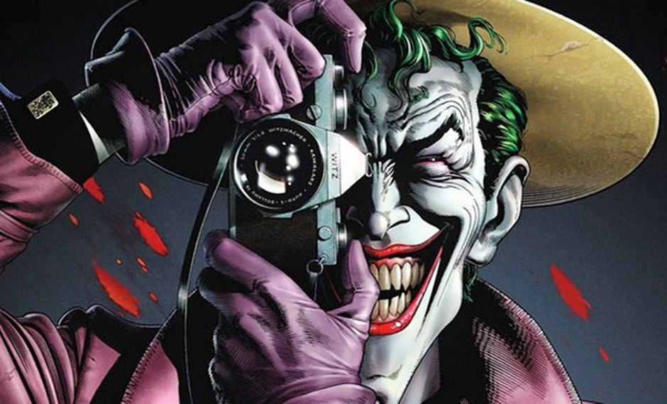
"Como sabes, la locura es como la gravedad… todo lo que se necesita es un pequeño empujón".
Joker
Joker (a veces traducido como Guasón o Comodín) es un personaje creado por Bill Finger, Bob Kane y Jerry Robinson, e introducido en el primer ejemplar del comic
book Batman, en abril de 1940, publicado por DC Comics. Se trata de uno de los criminales más notables de Gotham City, y es el enemigo principal de Batman.
Si bien sus orígenes y rasgos han variado con el transcurso del tiempo, por lo general se le asocia con una personalidad psicópata con un humor sádico y
retorcido, lo que le ha llevado a ser catalogado como la antítesis de Batman. Con la excepción de una etapa en la que mantuvo un rol de bromista simple, desde
los años 1970 Joker ha preservado sus orígenes siniestros y ha estado involucrado en ciertos momentos decisivos de Batman, como el asesinato de Jason Todd y la
parálisis de Barbara Gordon.181920 Su apariencia física (caracterizada por el rostro desfigurado, la piel blanca, el cabello teñido de verde y los labios rojos)
proviene de los efectos de la caída accidental del criminal en un recipiente de químicos.
Aunque carece de habilidades sobrehumanas para llevar a cabo sus crímenes, suele recurrir a su ingenio para desarrollar armas y dispositivos letales entre los
cuales se encuentran barajas con navajas, cajas sorpresas, explosivos en forma de cigarrillos y objetos rociadores de ácido. Algunas de sus colaboraciones con
otros supervillanos de Gotham City incluyen a Pingüino, Riddler, Dos Caras, Killer Croc y El Espantapájaros, así como grupos delictivos entre los cuales se
encuentran la Banda de la Injusticia y la Liga de la Injusticia. A partir de los años 1990 se introdujo su aliada e interés romántico Harley Quinn, aunque su
primordial obsesión es el hombre murciélago.
Joker es catalogado como uno de los mejores personajes y villanos de las historietas, cuya popularidad le ha permitido aparecer en una variedad de productos y
medios, entre los cuales se encuentran series televisivas, animaciones, largometrajes, videojuegos, juguetes, ropa y atracciones de parques de diversiones.
Algunos actores que han dado voz al personaje son Mark Hamill, Troy Baker y Richard Epcar, mientras que Cesar Romero, Jack Nicholson, Heath Ledger, Jared Leto y
Joaquin Phoenix lo han interpretado en el cine.
Lex Luthor
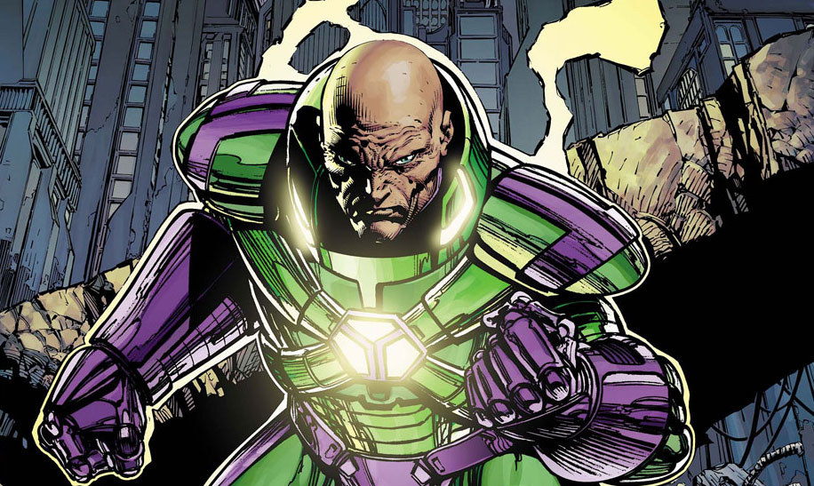
"No quiero hacer cosas buenas. Quiero hacer cosas grandes".
Lex Luthor
Alexander Joseph "Lex" Luthor es un personaje de ficción de DC Comics, un supervillano y el archienemigo de Superman, aunque dado su alto estatus como
supervillano, también entra en conflicto con Batman y otros superhéroes del Universo DC Una de sus más importantes apariciones fue en los cómics clasificado de
12 años en adelante. Fue creado por Jerome Siegel y Joe Shuster, y su primera aparición fue en Action Comics Nº 23 en 1940. Su historia ha sido varias veces
cambiada o revisada desde su creación, y su actual origen canónico es el que se cuenta en la serie limitada de Mark Waid Superman: Birthright.
Luthor es un rico hombre de negocios, uno de los hombres más inteligentes del Universo DC, considerado por muchos el humano mas inteligente en DC y cuenta con
las tecnologías más avanzadas en su empresa, superando a las de Bruce Wayne. Los objetivos de Lex Luthor normalmente se centran en matar a Superman, el principal
obstáculo para el logro de sus propósitos megalómanos. A pesar de contar con un poderoso exoesqueleto, Luthor carece de superpoderes o una doble identidad. Lex
ha construido cuidadosamente su imagen pública con el fin de evitar sospechas y ser arrestado. Es conocido por su filantropía, donando millones de dólares a
Metrópolis, financiando parques, fundaciones y organizaciones benéficas.
Lex Luthor normalmente aparece en los cómics y otros medios de comunicación como un magnate de los negocios con una cabeza calva. Sin embargo, Luthor fue
representado originalmente como un científico loco que causaba estragos en el mundo con su armamento futurista. El personaje fue más tarde replanteado como un
magnate de negocios y filántropo de Metrópolis. En sus primeras apariciones, Luthor se muestra con cabello rojo. A pesar de esto, el personaje más tarde se
volvió calvo como resultado del error de un artista. Una historia de 1960 de Jerry Siegel amplió el origen y las motivaciones de Luthor, revelando que era un
amigo de la infancia de Superman que perdió su cabello cuando un incendio destruyó su laboratorio, un fuego del que Luthor culpó a Superboy, que estaba tratando
de salvar a Lex. En la continuidad actual, el odio de Luthor hacia Superman se deriva de verlo como un rival para su estatus del hombre más poderoso de Metrópolis.
A raíz de la serie Crisis en las Tierras Infinitas, el personaje fue reestructurado como un industrial maquiavélico y criminal de cuello blanco, incluso llegando
a ser Presidente de los Estados Unidos. En los últimos años, varios escritores han regresado al Luthor científico loco de la década de 1940. El personaje se
clasificó en el cuarto lugar en la lista de Top 100 Comic Book Villains of All Time de IGN.
Darkseid
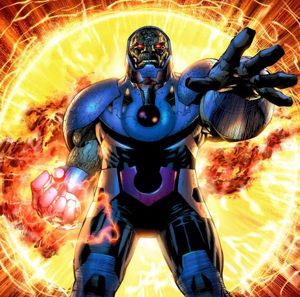
"Tu concepción del bien y del mal son insignificantes, de hecho, tu minúscula conciencia de esto es tan obtusa y vana que incluso considerar tu propio
sentimiento sería un gran perjuicio para aquellos que lo son".
Darkseid
Darkseid es un supervillano ficticio que aparece en los cómics estadounidenses publicados por DC Comics. Creado por el escritor y artista Jack Kirby, el
personaje hizo una aparición en Superman's Pal Jimmy Olsen # 134 (noviembre de 1970) antes de hacer su primera aparición completa en Forever People # 1
(febrero de 1971).
Él es el padre de Orión, Kalibak, Grayven y Grial. Como el gobernante tiránico del planeta Apokolips, el objetivo final de Darkseid es conquistar el universo y
eliminar todo el libre albedrío y los seres sensibles. Uno de los seres más poderosos en el Universo DC, el personaje se convirtió en un villano de Superman y
es considerado el archienemigo de la Liga de la Justicia. Darkseid era el número 6 en la parte superior 100 villanos de cómics de IGN de todos los tiempos y el
número 23 en Wizard 100 mejores villanos de todos los tiempos.
Frank Welker expresó a Darkseid en la serie animada Super Friends: The Legendary Super Powers Show y The Super Powers Team: Galactic Guardians, que se convirtió
en su primera aparición en medios de comunicación, aparte de los cómics. El personaje fue interpretado posteriormente por Michael Ironside en el universo animado
de DC, Andre Braugher en Superman/Batman: Apocalypse, Steven Blum en Justice League: War y "Weird Al" Yankovic en un episodio de Teen Titans Go!.
Ares
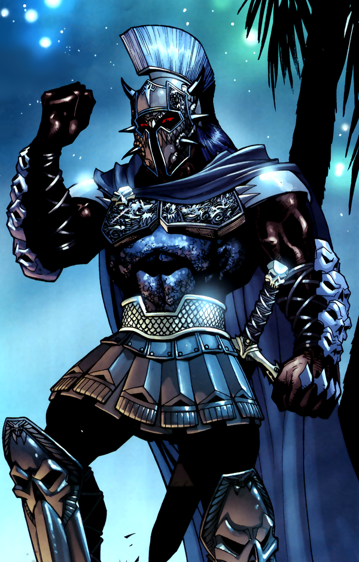
"Mis hijos no son más que alimañas que envenenarán a su padre con traición y veneno. Estos pequeños dioses son necios despreciables e ingratos. Son
fracasos y no son dignos de la fe que te han quitado".
Ares
Ares (también llamado a veces como Marte o Guerra) es el nombre de un personaje ficticio de DC Comics, basado libremente en Ares, el dios de la guerra de la
mitología griega. Es un importante adversario de las amazonas de Themyscira y de Mujer Maravilla.
En la adaptación cinematográfica de Wonder Woman, de 2017, es interpretado por el actor británico David Thewlis. Thewlis hace un pequeño cameo como Ares en una
escena de flashback en la película Liga de la Justicia.
Ares apareció por primera vez en Wonder Woman # 1, volumen 1, publicado en el verano de 1942 y escrito por el creador de la Mujer Maravilla William Moulton
Marston. En el próximo número, reapareció bajo su nombre romano, Marte. Se conservaría este nombre hasta febrero de 1987, cuando el escritor/artista George
Pérez restauró a Ares a su nombre griego como parte de su reinicio de la mitología de la Mujer Maravilla. A medida que la continuidad narrativa del cómic Wonder
Woman fue aumentando también se fueron ajustando por diferentes autores a lo largo de los años, varias versiones de Marte/Ares, con diferentes personalidades y
apariencias físicas, aunque la mayoría lo han representado llevando armaduras de gladiadores griegos o romanos. Una de las apariencias de más larga duración del
personaje, diseñada por George Pérez, es la de un guerrero griego de ojos rojos vestido con armadura negra y añil de batalla, la cara oculta por un casco ático.
Cuando la continuidad de DC se reinicia de nuevo en 2011 durante Flashpoint (Evento conocido como Los Nuevos 52), se adopta una nueva versión del personaje,
ideada por el escritor Brian Azzarello y artista de Cliff Chiang. Lo presenta como un mentor para la Mujer Maravilla. En un inicio marcado por encarnaciones
anteriores, esta versión de los Nuevos 52 originalmente tenía la apariencia de un hombre mayor, usando un traje masculino desaliñado del siglo XX, con una larga
barba blanca y ojos de tono negro, con los pies descalzos manchados de sangre. En apariciones posteriores, esta versión se transformará en un, físicamente más
formidable, guerrero con una figura más joven. Se refiere una vez más como Ares,y lo representan como un soldado griego descomunal empuñando un hacha de
combate, con una barba larga roja, capa de piel y un casco frigio coronado con cuernos de carnero.
Sinestro
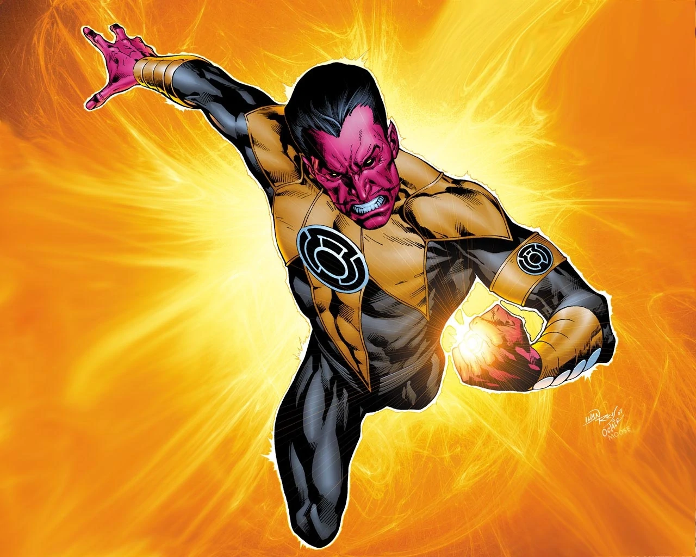
"En el día más oscuro, en la noche más brillante,
Teme a tus miedos hechos luz.
Que aquellos que pretendan oponerse a lo que es bueno,
Ardan como mi poder...¡¡LA LUZ DE SINESTRO!!".
Sinestro
Thaal Sinestro, es un supervillano ficticio que aparece en los cómics publicados por DC Comics. Sinestro es un ex miembro del Green Lantern Corps que fue dado
de baja deshonrosamente por abusar de su poder. Es el archienemigo de Hal Jordan y fundador del Cuerpo de Sinestro.
El personaje fue creado por John Broome y Gil Kane, y apareció por primera vez en Green Lantern (vol. 2) # 7 (agosto de 1961). En 2009, IGN clasificó a Sinestro
como el 15º mejor villano de cómics de todos los tiempos.
Sinestro nació en el planeta Korugar en el sector espacial 1417. Su dedicación a preservar el orden se manifestó originalmente en su carrera anterior, un
antropólogo especializado en reconstrucciones de ruinas de civilizaciones muertas hace mucho tiempo. Un día, mientras estaba en uno de esos sitios, una Linterna
Verde llamada Prohl Gosgotha aterrizó de golpe en el sitio, herido y aparentemente muriendo. Rápidamente le dio su anillo a Sinestro, justo a tiempo para que
Sinestro, que apenas entendía lo que el anillo podía hacer, se defendiera del perseguidor de la Linterna: un Weaponer de Qward; sin embargo, Sinestro tuvo que
destruir las ruinas que había dedicado a restaurar para aplastar al Qwardian. Después, Gosgotha resultó estar aún vivo y le pidió que le devolviera el anillo
para mantenerlo con vida el tiempo suficiente para obtener ayuda. Sinestro, sabiendo que esto significaría no ser un Green Lantern, lo dejó morir y se hizo cargo
de su puesto. Los Guardianes no estaban al tanto de sus acciones.
Cuando Hal Jordan se unió al Green Lantern Corps, Sinestro fue asignado para ser su instructor. Jordan estaba horrorizado por los métodos totalitarios de su
nuevo mentor, aunque Sinestro sostuvo que su gobierno feroz era necesario para proteger a su pueblo de las fuerzas alienígenas. Durante su entrenamiento, Jordan
ayudó a Sinestro a repeler un intento de invasión de Korugar por los señores de la guerra alienígenas conocidos como los Khunds. Cuando Jordan pidió ayuda a los
otros Linternas Verdes, la dictadura de Sinestro quedó expuesta y se vio obligado a comparecer ante los Guardianes para recibir un castigo. Katma Tui, el líder
de un movimiento de resistencia korugariano que sentía que la "protección" de Sinestro impedía que su gente creciera como sociedad a través del contacto con
otras razas alienígenas, fue reclutado como su reemplazo en el Cuerpo. Aunque Katma Tui finalmente se convirtió en una de las Linternas Verdes más respetadas,
ella y el resto de Korugar inicialmente se resistieron a su nombramiento en el Cuerpo; Debido a las acciones de Sinestro, Korugar había llegado a considerar el
símbolo del Green Lantern Corps como un emblema de terror y opresión.
Por usar el poder del krunk para infundir miedo en lugar de combatirlo, los Guardianes desterraron a Sinestro al universo de antimateria, una contraparte del
universo "real" formado por "materia negativa". Sinestro terminó en el mundo antimateria de Qward, la contraparte de ese universo del mundo natal de los
Guardianes Oa, que estaba gobernado por una raza de guerreros y científicos conocidos como los Armadores de Qward, que tenían un odio feroz hacia los Guardianes
y todas las Linternas Verdes. Al exiliar a Sinestro a un mundo gobernado por seres malvados que lo odiaban específicamente como Linterna Verde, los Guardianes
esperaban humillarlo. Sin embargo, su intento de castigo sería un gran error de cálculo. Sinestro creía haber sido perjudicado por sus antiguos amos y ahora los
odiaba tanto como los Armadores. A través de su odio mutuo hacia los Guardianes, Sinestro y los Armadores se convirtieron en aliados, y los Armadores ofrecieron
ayudar a Sinestro a vengarse de los Guardianes y el Cuerpo.
Creando un anillo de poder amarillo para que Sinestro lo use, los Armadores lo enviaron de regreso al universo de la "materia positiva" para buscar su venganza.
Sinestro se convirtió rápidamente en el enemigo más poderoso del Green Lantern Corps, en parte debido a una debilidad en sus anillos de poder que les impedía
afectar directamente el color amarillo. A pesar de esto, hábiles Linternas Verdes como Jordan, el enemigo más odiado de Sinestro, siempre encontraron formas de
derrotarlo.
Ozymandias
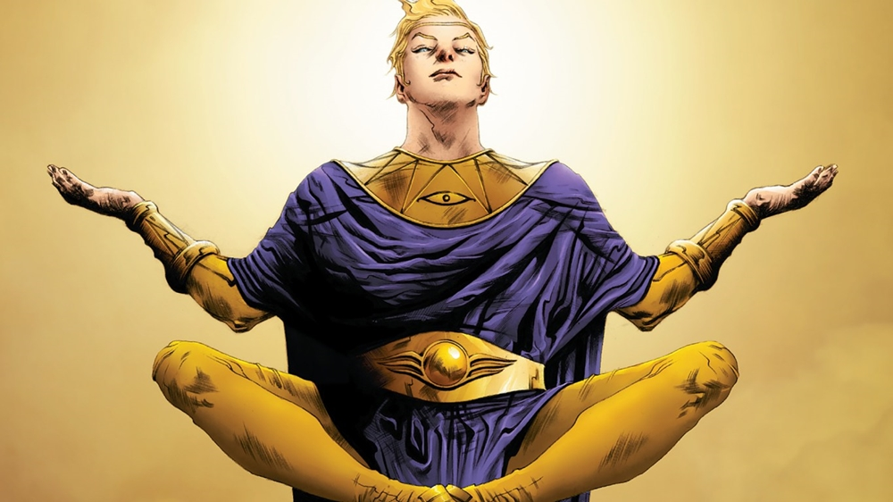
"¿Hacerlo?' Dan, no soy un villano de opereta ¿En serio crees que te iba a explicar mi plan maestro si quedase la más mínima posibilidad de que pudieras
alterar su resultado? Lo hice hace 35 minutos".
Adrian Veidt (Ozymandias)
Ozymandias (nombre real Adrian Alexander Veidt) es un personaje ficticio de la aclamada miniserie de novela gráfica Watchmen, creada por Alan Moore y Dave
Gibbons, publicada por DC Comics. Él sirve como protagonista y antagonista de la serie. Nombrado Ozymandias en la forma de Ramsés II, es una versión modificada
del personaje de cómic Peter Cannon, de Charlton Comics. Su nombre recuerda el famoso poema de Percy Bysshe Shelley, que tiene como tema la naturaleza efímera
del imperio y es extraído como epígrafe de uno de los capítulos de Watchmen. Ozymandias está en el puesto número 25 en lista de los mejores 200 personajes de
cómic de Wizard y número 21 en la lista los mejores 100 villanos de IGN.
Adrian Alexander Veidt nació en 1939, y es hijo de padres inmigrantes alemanes ricos. De niño, recibió altas calificaciones en la escuela, y se observó que era
muy inteligente. Luego escondió esta información de sus mayores y compañeros al lograr deliberadamente notas promedio. Después de la muerte de sus padres, heredó
su considerable fortuna a la temprana edad de diecisiete años, pero decidió dejarlo todo a la caridad y embarcarse en una búsqueda de la visión, siguiendo la
ruta de su ídolo de la infancia Alejandro Magno. Su razonamiento era que él quería ser libre del dinero y hacer algo de sí mismo por su cuenta, de la nada.
Durante una excursión en el Oriente Medio, Veidt consumió una bola de hachís y desarrolló visiones del pasado. Al término de sus viajes, en Egipto, se dio
cuenta de que Alejandro Magno era una pálida imitación de Ramsés II, que se convirtió en el nuevo héroe de Veidt.
Volviendo a Estados Unidos después de un año de viajar, Veidt se nombró Ozymandias y se convirtió en un vigilante disfrazado, ganando una reputación como «el
hombre más inteligente del planeta». Debutó a principios de 1958 al exponer una red de narcotráfico en Nueva York. Durante la década de los 60, fue miembro de
los Crimebusters, organizado por el ex-Minuteman y aventurero Capitán Metrópolis, que trató de volver a formar una nueva versión de su antiguo equipo.
Debido a las percepciones cada vez más negativas de los vigilantes por los medios, Veidt predijo que el público se alejaría de ellos. Dos años antes de que los
justicieros vigilantes fueran prohibidos por la Ley Keene, Veidt reveló su identidad secreta, se retiró del superheroísmo y comercializó su imagen, al tiempo que
mantenía una racha de ética: nunca comercializó las imágenes de sus aliados o enemigos, a pesar de tener un vacío legal para hacerlo. Se hizo muy rico y era
conocido como un gran humanista, y él lo utilizó para financiar su plan secreto para crear un evento catastrófico para engañar al mundo y que se uniese contra
un enemigo común y, por lo tanto, evitar la guerra nuclear. Al terminar su proyecto, Veidt planeaba asesinar a todos sus cómplices (involuntarios) y arreglar el
deterioro psicológico y autoexilio del supuestamente invencible Doctor Manhattan.
Su compañero, el vigilante enmascarado El Comediante (Edward Blake), tropezó con los planes de Veidt, llevando a Veidt a asesinar personalmente al Comediante,
soltando la cadena de eventos relatados en la historia de Watchmen, que comienza varias horas después del asesinato del Comediante.
Como parte de su experimentación genética, creó un felino genéticamente modificado, al que llamó Bubastis (el nombre griego de una antigua ciudad egipcia que
honra a la diosa Bast), como su mascota y protector.
Watchmen comienza poco después de la muerte de Blake; Veidt es visto por primera vez cuando Rorschach lo visita para obtener su opinión sobre el asesinato de
Blake y advertirle a Veidt sobre un posible asesino en serie persiguiendo superhéroes («el asesino de la máscara»). Rorschach no está convencido de la teoría de
Veidt de que Blake fuera asesinado por un archirrival amargado. Veidt es una de las pocas personas que asisten al funeral de Blake, en la que recuerda el pasado
sobre la reunión de Crimebusters fallida. A mitad de la historia de Watchmen, Veidt escapa por poco de un intento de asesinato que deja a su ayudante muerto. El
supuesto asesino muere por una cápsula de cianuro no vista antes de que Veidt le pueda interrogar.
En el clímax de Watchmen, Rorschach y Búho Nocturno (Dan Dreiberg) deducen que Veidt está detrás de todo el plan después de que descubren que una empresa
fantasma de la corporación de Veidt empleó a todas las personas cuyo cáncer fue presuntamente causado por el contacto con el Doctor Manhattan. Rorschach y Búho
Nocturno se dan cuenta de que Veidt expuso a la examante de Manhattan, sus colegas y un enemigo a la radiación y deliberadamente los monitoreó para darles
cáncer, para que Manhattan huya de la Tierra por culpa o la enemistad del público. Cuando Rorschach y Búho Nocturno llegan a Karnak, el retiro de Veidt en la
Antártida, Veidt los vence a los dos fácilmente. Él explica su plan para salvar a la humanidad de sí misma: inspirado por la plegaria del Capitán Metrópolis de
que alguien necesitaba salvar al mundo, él ideó un plan para teletransportar una criatura telepática biológicamente diseñada hacia Nueva York, que explotaría
inmediatamente en una onda de choque psíquica, matando a millones y convenciendo al mundo de que estaban bajo ataque extraterrestre. Los Estados Unidos y la
Unión Soviética, al borde de la confrontación nuclear, pondrían fin a su disputa y unirían fuerzas contra los supuestos invasores alienígenas. También admite
inculpar a Manhattan; matar al Comediante, que había descubierto el plan; culpar a Rorschach por el asesinato de Moloch; y arreglar el atentado contra su propia
vida, forzando a su atacante a tragar una pastilla de cianuro. Cuando Rorschach y Búho Nocturno le preguntan cuando planeaba ejecutar su plan, Veidt revela que
se completó antes de que llegaran, diciendo: «Lo hice hace treinta y cinco minutos», lo cual es confirmado luego por las emisiones de noticias.
El Doctor Manhattan regresa de su exilio autoimpuesto con Espectro de Seda. El siempre preparado Veidt los ataca, pero su método previsto de derrotar al Doctor
Manhattan falla. Él desintegra a Manhattan, que pronto se reforma a sí mismo. Manhattan y Espectro de Seda descubren el papel de Veidt en la destrucción de Nueva
York, pero, al darse cuenta de que exponer el plan de Veidt deshará la incipiente paz en el mundo, los héroes acceden a permanecer en silencio en el plan, a
excepción del absolutista moral Rorschach. Como Rorschach se prepara para regresar a los Estados Unidos y revelar el plan de Veidt al mundo, en última instancia
deja que Manhattan lo mate. Antes de que Manhattan se vaya para crear vida en otra galaxia, Veidt le pregunta si «hizo lo correcto al final». Manhattan responde
que «¿Al final? Nada termina, Adrian. Nada termina jamás», dejando a Veidt en la duda sobre cuánto tiempo va a durar la paz, y si Blake tenía razón sobre la
humanidad después de todo.
Como termina la historia, Veidt (y todos los demás) es ajeno al hecho de que antes de la confrontación final, Rorschach envió un diario de sus hallazgos a un
periódico local. El diario de Rorschach detalla toda su investigación y sus conclusiones sobre el plan de Veidt. En la última página, el editor deja a su
asistente a cargo de elegir el material de «relleno» de una pila de mensajes enviados por los lectores. El diario de Rorschach está en la pila, pero si el
asistente decide imprimirlo no se revela.
Ahora los de Marvel
Marvel
Magneto
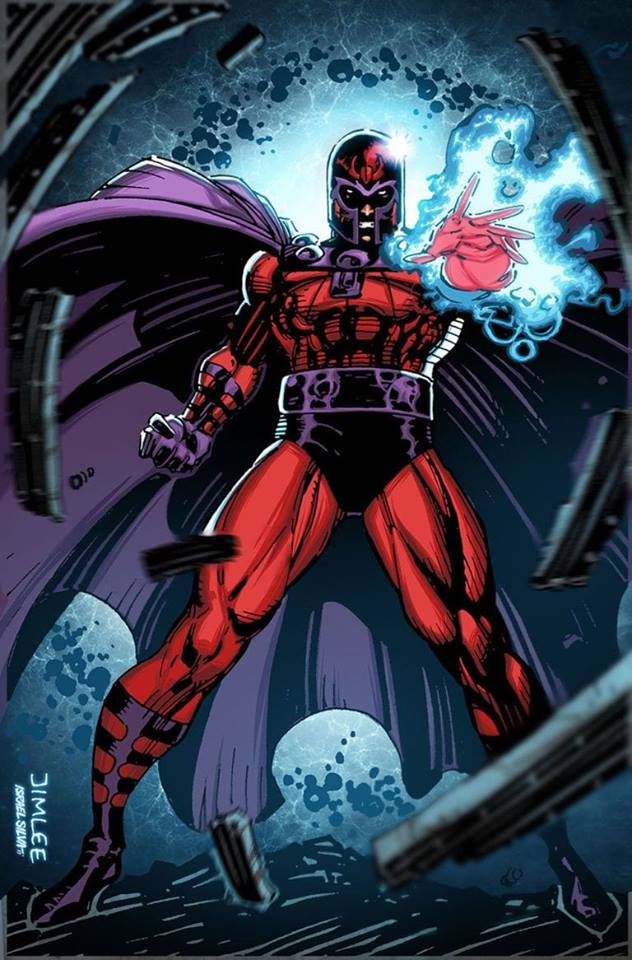
"Eres un dios entre los insectos… nunca dejes que nadie te diga lo contrario".
Magneto
Magneto (Max Eisenhardt o Erik Lehnsherr) es un personaje ficticio que aparece en las historietas de los X-Men publicadas por Marvel Comics. Es el antagonista
central en la colección X-Men, así como en programas de televisión y películas de esa franquicia. La primera aparición del personaje fue en Uncanny X-Men
vol. 1 # 1 (septiembre de 1963), creado por el guionista Stan Lee y el dibujante Jack Kirby.
Poderoso mutante con la habilidad de generar y controlar campos magnéticos mentales, Magneto ha sido el más eminente enemigo que hayan tenido los X-Men desde su
creación. En sus primeras apariciones su motivación se debía a la megalomanía, pero posteriormente los guionistas han dado cuerpo al personaje y su origen,
revelando que es un superviviente del holocausto judío (Shoah), cuyas acciones se encaminan a la protección de la raza mutante y evitar que sufra un destino
similar. Su papel en los cómics ha variado desde supervillano a antihéroe o incluso héroe. Magneto toma en sus manos la causa mutante con la Hermandad de
mutantes, y se convierte en su líder, radical y extremista, con aspiraciones a la dominación mundial por parte de los mutantes sobre la raza humana, a la que
considera próxima a su extinción. Sus planes serán siempre desmantelados por los mutantes que siguen las ideas de coexistencia pacífica de Charles Xavier, aunque
en algunas ocasiones Magneto ha colaborado con los X-Men e incluso se ha convertido en su líder.
La historia temprana del personaje ha sido inspirada en el líder de los derechos civiles Malcolm X y el fundador de la Liga de Defensa Judía Meir Kahane. Magneto
se opone a la actitud pacifista del Profesor X y presiona por un enfoque más agresivo para lograr los derechos civiles.
Sir Ian McKellen interpretó a Magneto en la serie de películas X-Men, y Michael Fassbender hizo lo propio como la versión más joven del personaje en las
precuelas X-Men: primera generación, X-Men: días del futuro pasado, X-Men: Apocalipsis y Dark Phoenix. Magneto ha puntuado como el número 1 en la lista IGN de
los Más Grandes Villanos del Cómic, y como el noveno mejor personaje de la Historia en la lista Wizard de los Mejores Personajes de Comic-book de Todos los
Tiempos, el segundo más alto entre los villanos de esa lista.
Thanos
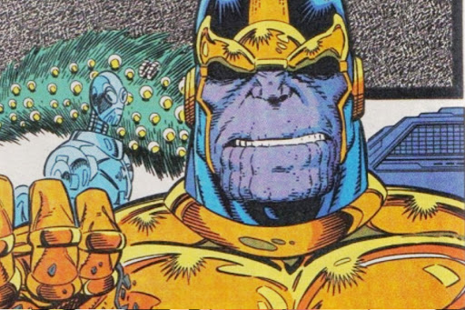
"Las decisiones difíciles requieren voluntades fuertes".
Thanos
Thanos es un supervillano ficticio que aparece en los cómics estadounidenses publicados por Marvel Comics. Creado por el escritor y artista Jim Starlin el
personaje apareció por primera vez en The Invincible Iron Man # 55 (febrero de 1973). Su nombre es en parte un juego de palabras que hace referencia al término
griego Θάνατος (Thánatos), que significa muerte, pero principalmente es una deformación del nombre del dios de la muerte no violenta, Tánatos. Él es el hijo de
Mentor y el hermano de Starfox. Thanos es uno de los villanos más poderosos del Mundo Marvel y se ha enfrentado con muchos héroes, incluidos los Vengadores, los
Guardianes de la Galaxia, los Cuatro Fantásticos, los X-Men, entre otros.
El personaje aparece en el Universo Cinematográfico de Marvel, interpretado por Damion Poitier en The Avengers (2012), y por Josh Brolin en Guardianes de la
Galaxia (2014), Avengers: Age of Ultron (2015), Avengers: Infinity War (2018) y Avengers: Endgame (2019), mediante la captura de voz y movimiento. El personaje
ha aparecido en otros productos respaldados por Marvel, incluidas series de televisión animadas, juegos electrónicos y videojuegos.
El personaje fue creado por el escritor-artista Starlin, que concibió originalmente a Thanos de Titán durante sus clases de psicología en la universidad.
Citando a Starlin: «Fui a la universidad tras cumplir con el servicio militar de los EE. UU. y antes de conseguir un trabajo en el mundo de los cómics. Hubo
una clase de psicología en la que di finalmente con Thanos… y Drax el Destructor, quizás fue en terapia de control de la ira. Por eso visité Marvel y el editor
Roy Thomas me preguntó si quería escribir un número de Iron Man. Sentí que era mi única oportunidad de llegar a crear un personaje, y no tenía confianza en
que mi carrera fuera a durar más de unas semanas. Así que se sintieron atraídos por él. Thanos era un personaje mucho más débil, y Roy sugirió que le diera
un aspecto más poderoso, por lo que lo aumenté bastante con respecto a los bocetos iniciales... y posteriormente me gustó tanto el seguir dándole poder que
continuó creciendo en tamaño».
Starlin ha admitido que la creación del personaje estuvo influenciado por el Darkseid de Jack Kirby.
Loki
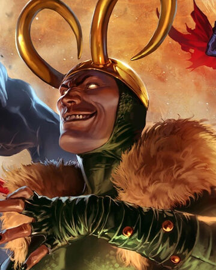
"Recuerdo una sombra... siempre a la sombra de tu grandeza... recuerdo bien que me arrojaste a un abismo... yo que erá y debía ser el rey".
Loki
Loki (Loki Laufeyson) es un personaje ficticio que aparece en los cómics estadounidenses publicados por Marvel Comics. Creado por el escritor Stan Lee, el
guionista Larry Lieber y el dibujante Jack Kirby, una versión del personaje apareció por primera vez en Venus # 6 (agosto de 1949). La encarnación moderna de
Loki apareció por primera vez en Journey into Mystery # 85 (octubre de 1962). Él es el hermano adoptado y, a menudo, el enemigo del superhéroe Thor. Loki se
basa en la deidad nórdica del mismo nombre y, a veces se describe como un antihéroe.
Loki ha aparecido en varias series en curso, series limitadas y series de realidad alternativa, incluyendo su propia serie de 4 números Loki (2004). Fue el
personaje principal de Journey into Mystery desde los números 622 a 645, y apareció en los nuevos números de Jóvenes Vengadores en 2013. Comenzó a aparecer en
su serie en solitario Loki: Agent of Asgard en 2014 y nuevamente en 2016 con Vote Loki. El personaje también apareció en mercadería asociada de Marvel,
incluyendo series de televisión animadas, ropa, juguetes, videojuegos y películas.
En 2009, Loki se clasificó como IGN, el octavo más grande villano de cómic de todos los tiempos y en 2014 se clasificó de nuevo por IGN, esta vez como el cuarto
más grande villano de cómic de todos los tiempos.2 Tom Hiddleston interpreta a Loki en el Universo Cinematográfico de Marvel, que apareció por primera vez en la
película de acción en vivo Thor (2011), y luego nuevamente en The Avengers (2012), Thor: The Dark World (2013), Thor: Ragnarok (2017), Avengers: Infinity War
(2018) y Avengers: Endgame (2019). Hiddleston volverá a retratar el papel en la próxima serie de Disney+ Loki (2021).
Doctor Doom
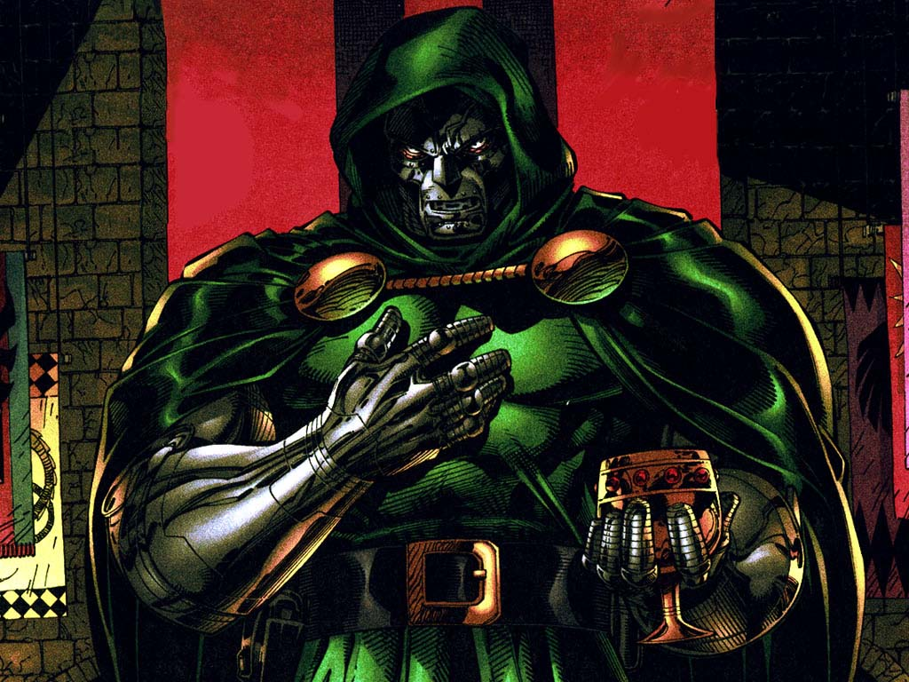
"Doom: Míranos Summers tu y yo somos reliquias de una época más elegante
Scott: ¿Elegante?
Doom: Antes de que guerras y actos gubernamentales enlodaran el agua. Representamos algo alguna vez. Yo, el uso de poder para ganancia personal, ya que quien
más que yo mismo se podría beneficiar de mis esfuerzos.
Tu y tu clase, usando su poder para el bien común aun así la clase común nos despreciaba a ambos... y a ti más que a mí. ¿Sabes por qué?
Scott: Porque la gente es idiota
Doom: Porque me entendían. Yo era el villano. Egoísmo no altruismo, es el sentimiento moral más común de la Humanidad. Tu respondías a sus sospechas con
altruismo y como no podían entenderlo, te odiaban más que nada... Eso y... bien, porque la gente es idiota".
El Doctor Victor von Doom (llamado como Victor von Muerte en España y algunas otras traducciones) es un supervillano ficticio que aparece en los cómics
estadounidenses publicados por Marvel Comics. Creado por el escritor y editor Stan Lee y el artista / co-creador Jack Kirby en la Edad de Plata de los cómics el
personaje hizo su debut en The Fantastic Four # 5 (julio de 1962). El monarca de la nación ficticia Latveria, Doom, usualmente es representado como el
archienemigo de Los 4 Fantásticos. Aunque sus principales adversarios fueron Los 4 Fantásticos, también ha entrado en conflicto con los X-Men y otros superhéroes
del Universo Marvel.
Doctor Doom fue clasificado # 4 por Wizard en su lista de los 101 villanos más grandes de todos los tiempos3y # 3 en la lista de IGN de los 100 mejores villanos
de cómics de todos los tiempos.4En un artículo posterior, IGN declararía a Doom como el mejor villano de Marvel.
El personaje ha sido sustancialmente adaptado de los cómics a varias formas de medios, incluyendo series de televisión, videojuegos y mercaderías como figuras de
acción y tarjetas de intercambio. Doom también ha aparecido en otros largometrajes respaldados por Marvel, como The Fantastic Four, interpretado por Joseph
Culp, mientras que el actor Julian McMahon lo interpretó en la película de 2005 Fantastic Four y su secuela de 2007, Los 4 Fantásticos y Silver Surfer, como el
antagonista. Toby Kebbell interpreta al personaje en el reinicio de 2015.
Galactus
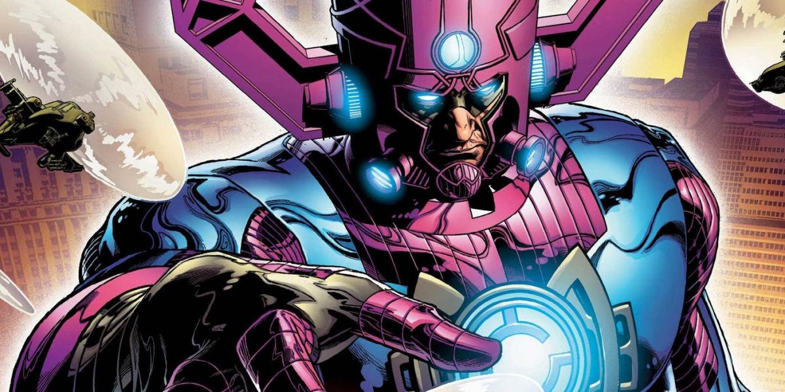
"Ningún ser vivo se atreve a ignorar mi llamada. Porque yo soy lo que siempre ha sido. Desde que este universo nació de las cenizas del último. Yo soy el
hambre que condena al mundo. Soy el que está más allá de conceptos tan frágiles como el bien y el mal. YO SOY GALACTUS".
Galactus
Galactus es un personaje ficticio que aparece en las publicaciones de Marvel Comics, creado por los historietistas Stan Lee y Jack Kirby. Su primera aparición
fue en marzo de 1966 en el número 48 de Fantastic Four.
En el universo Marvel, Galactus es un ser cósmico que necesita consumir planetas para calmar su hambre, por lo que recurre a la ayuda de heraldos que él mismo
nombra. Asimismo, ha sido descrito como una fuerza que el universo necesita para su propio equilibrio.
Galactus se llamaba originalmente Galan, un humanoide nacido en el planeta Taa, un paraíso como mundo cuya civilización habría sido la más avanzada de cualquiera
de los universos conocidos. Sin embargo, su mundo estaba al borde del colapso debido a una hipotética gran implosión.
Antes de esto, Galan descubrió que la plaga entrópica amenazaba a Taa; aunque en un principio dudó de su descubrimiento, pronto se demostró con la destrucción de
las civilizaciones cercanas a Taa. A pesar de los esfuerzos de los mejores científicos de Taa, no pudieron encontrar una cura y las radiaciones entrópicas
comenzaron a hacer estragos en su población.
Galan convenció a un pequeño grupo de supervivientes para morir de forma gloriosa lanzando una nave espacial en el ardiente crisol cósmico. Sus compañeros
murieron por efecto de la intensa radiación, pero Galan se vio pleno de una nueva energía, salvado por la Fuerza Fénix del agónico universo. La energía viviente
habló a Galan y le introdujo indemne dentro del Huevo Cósmico. Cuando en el consiguiente Big Bang el Huevo Cósmico explotó, creó un nuevo universo.
Simultáneamente, Galan y su nave espacial fueron recreados junto con las encarnaciones de Eternidad, Infinito y la Muerte. Vagó inerte durante millones de años
mientras la vida comenzaba a poblar el nuevo universo. Su nave se estrelló en un planeta innominado, en donde Ecce el Vigilante vio cómo su ocupante emergía de
la misma como pura energía; Ecce reconoció el peligro que traía consigo el naciente ser y podría haberle destruido, pero no hizo nada cumpliendo el juramento de
no interferencia de los Vigilantes. Devolviendo la nave al espacio, el ser que una vez fue Galan arrojó los cuerpos sin vida de sus compañeros al vacío. Después
creó un traje acorazado para contener y regular la terrible energía de la que estaba formado y transformó su barco en una cámara de incubación, en donde pasó
incontables siglos evolucionando hacia su forma actual.
Tiempo después la nave volvió a caer en la órbita de un planeta, Archeopia; la avanzada civilización surgida en él escanearon al recién incorporado satélite, y,
detectando sus asombrosas energías, decidieron sabiamente no interactuar con ella. Años después, cuando una guerra interestelar se extendió por ese sector del
espacio, los enemigos sin identificar de los archeopianos confundieron la nave-incubadora con un arma y le dispararon. Emergiendo indemne de la misma, el ser
que se autobautizó como Galactus pronto acabó tanto con los invasores como con los defensores de Archeopia, para después consumir la bio-energía del planeta
(primero de los muchos mundos que perecerían ante su hambre cósmica); tan sólo una pequeña flota de archeopianos sobreviviría a la catástrofe.
Examinando la destrucción que había creado, Galactus decidió crear un mundo que eclipsase a cualquier otro existente. Esto le llevaría milenios, incluyendo
descansos para recobrar sus energías a través de la destrucción de nuevos mundos; finalmente Galactus completó Taa II, una inmensa nave que se convirtió en su
nuevo hogar. Inicialmente, Galactus dejaba pasar siglos sin alimentarse, buscando mundos inhabitados que fuesen capaces de proporcionar vida; pero gradualmente
se vio hambriento con más frecuencia, y comenzó a consumir mundos habitados si no encontraba otros. Galactus racionalizó sus acciones considerándose un ser
superior, una creencia más fácil de sustentar gracias a la profecía que sostenía que algún día compensaría al universo por toda la destrucción causada,
concediéndole mucho más de lo que le había arrebatado. A pesar de conseguir no caer presa de los remordimientos, Galactus sentía la angustia de la soledad, por
ello creó un ser a su imagen y semejanza. Sin embargo, mientras que Galactus se contentaba con sobrevivir, su creación ansiaba conquistas, por ello se ganó el
nombre de Tirano. El Tirano combatió a su creador en una batalla indescriptible, de donde Galactus salió triunfante.
Después de esto, Galactus decidió usar varios sirvientes sin mente, siendo los más usados los llamados Castigadores, probablemente seres creados o esclavizados
por el Devorador de Mundos. Finalmente, llegó a la conclusión de que era más eficiente enviar un heraldo en busca de nuevos mundos que hacerlo en persona.
Su primer heraldo fue derrotado y encarcelado, presumiblemente por su naturaleza malvada y violenta. Este heraldo, el Caído, escapó varias veces a lo largo de
milenios, cada vez atacando a su antiguo amo, quien siempre le derrotó.
Ya en tiempos más o menos cercanos, Galactus amenazó con devorar el planeta Zenn-La, pero fue convencido por el nativo Norrin Radd para perdonarlo a cambio de
convertirse en su nuevo heraldo. Galactus transformó a Radd en Silver Surfer (Estela Plateada), suprimiendo su moral para que pudiese conducirle a mundos
habitados cuando fuese necesario, como el planeta de los simbiontes o el planeta Kree Tarsis. El deslizador ayudó en una ocasión a terminar con la amenaza del
señor de la guerra, Kallreich el Inconquistable, para consumir el mundo que había invadido.
Más que un ser, es una fuerza cósmica. Su único fin es mantener el equilibrio universal, aunque esto signifique devorar planetas enteros.
Ego el planeta viviente
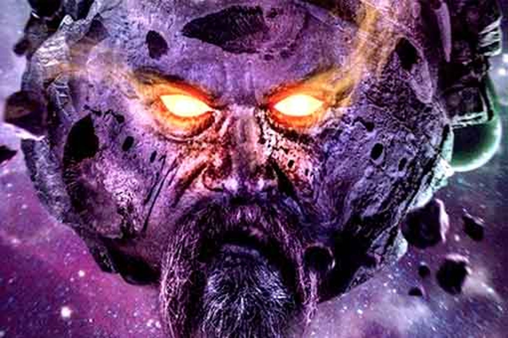
"¡¡Soy el plante viviente.!! ¡¡Yo soy Ego!!".
Ego
Ego el Planeta Viviente es un personaje ficticio, un supervillano del universo de Marvel Comics. El personaje apareció por primera vez en Thor #132
(septiembre de 1966) y fue creado por el escritor Stan Lee y el artista Jack Kirby.
Ego es retratado por Kurt Russell en Guardianes de la Galaxia Vol. 2 como el padre biológico celestial de Peter Quill en el Marvel Cinematic Universe en lugar de
J´son.
Ego fue creado por Jack Kirby durante una fase en la que quedó fascinado con el universo. Ego, los alienígenas Kree y los Los Colonizadores sucedieron
inmediatamente de la creación de Galactus y ayudaron a establecer la propia "mitología de la era espacial" de Marvel Comics.
Ego el Planeta Viviente se introdujo inicialmente en el título Thor volumen #132 (Sept. 1966), y fue creado por el escritor Stan Lee y el artista Jack Kirby.
Como Kirby recordó en 1969, poco después del debut del personaje, la génesis de Ego se produjo cuando Ego vuelve como protagonista en Thor #160-161
(Ene.-Feb. 1969), e hizo una aparición especial en el #201. Su origen es explorado en Thor #228.
Después de sus apariciones en Fantastic Four #234-235 (Sept.-Oct. 1981) y Rom #69 (Ago. 1985), Ego tuvo un papel recurrente en Silver Surfer vol, 3 #4-22
(1987–1989). El personaje volvió en el anual de 1991 Thor y los volúmenes #448-450 (junio-agosto 1992).
Ego una vez le dijo a Thor que fue el resultado de un científico fusionándose con un planeta cuando el sol de ese planeta se convirtió en nova.
Ego comenzó a absorber naves espaciales e incluso otros mundos para sobrevivir, planeando una conquista interestelar. Este comportamiento atrae la atención de
los Colonizadores Rigelianos, que temen que Ego esté cerca de consumir su mundo natal. Ellos reclutan al Dios del Trueno Thor para derrotar a Ego. Acompañado
por un Registrador rigeliano, Thor encuentra a Ego, quien promete nunca dejar la Galaxia Negra y que renunció a sus planes de conquista, sintiéndose humillado
por su derrota.4 Varios meses más tarde, un Galactus debilitado invade el espacio de Ego y busca reponer su energía al consumir a Ego. Thor ayuda a Ego a luchar
contra Galactus y, en gratitud, Ego permite que su superficie se convierta en el nuevo hogar de los Caminantes, una raza cuyo planeta había sido el primero en
ser devorado por Galactus miles de millones de años atrás.